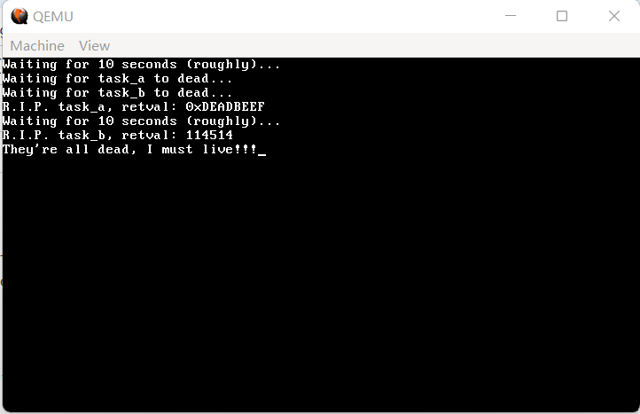
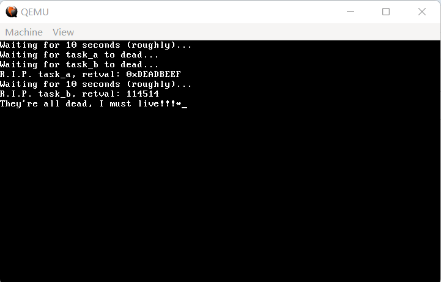
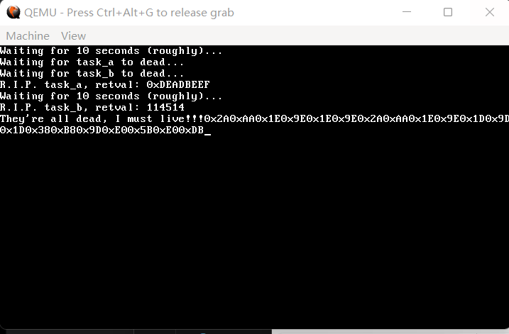
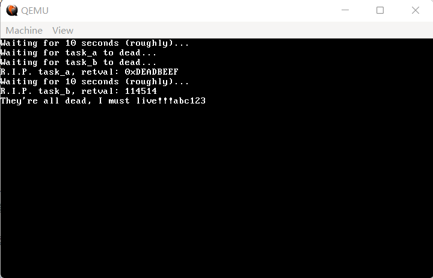

13 终于可以打字了——键盘驱动（上）
如果没有键盘，这篇文章大概是写不出来的，由此就可以看出键盘对于人机交互的重要影响。
首先是一个好消息，键盘在 PIC 里是有外设编号的（希望大家还记得 PIC，否则建议复习第10节），按我们的设定，编号为 33。并不是所有的外设都在 PIC 里自带编号，像网卡啊、声卡这些，都是没有自带编号的。
那么既然如此，新建 drivers/keyboard.c，我们来写一个最简单的键盘驱动：
代码 13-1 最简单的键盘驱动（drivers/keyboard.c）
#include "isr.h"
#include "keyboard.h"
void keyboard_handler(registers_t *regs)
{
monitor_write("*");
}
void init_keyboard()
{
register_interrupt_handler(IRQ1, keyboard_handler);
}
代码 13-2 声明（include/keyboard.h）
#ifndef _KEYBOARD_H_
#define _KEYBOARD_H_
void init_keyboard();
#endif
添加了新目录，照例放一下 Makefile：
代码 13-3 如今的 Makefile（Makefile）
OBJS = out/kernel.o out/common.o out/monitor.o out/main.o out/gdtidt.o out/nasmfunc.o out/isr.o out/interrupt.o \
out/string.o out/timer.o out/memory.o out/mtask.o out/keyboard.o
out/%.o : kernel/%.c
i686-elf-gcc -c -I include -O0 -fno-builtin -fno-stack-protector -o out/$*.o kernel/$*.c
out/%.o : kernel/%.asm
nasm -f elf -o out/$*.o kernel/$*.asm
out/%.o : lib/%.c
i686-elf-gcc -c -I include -O0 -fno-builtin -fno-stack-protector -o out/$*.o lib/$*.c
out/%.o : lib/%.asm
nasm -f elf -o out/$*.o lib/$*.asm
out/%.o : drivers/%.c
i686-elf-gcc -c -I include -O0 -fno-builtin -fno-stack-protector -o out/$*.o drivers/$*.c
out/%.o : drivers/%.asm
nasm -f elf -o out/$*.o drivers/$*.asm
out/%.bin : boot/%.asm
nasm -I boot/include -o out/$*.bin boot/$*.asm
out/kernel.bin : $(OBJS)
i686-elf-ld -s -Ttext 0x100000 -o out/kernel.bin $(OBJS)
a.img : out/boot.bin out/loader.bin out/kernel.bin
dd if=out/boot.bin of=a.img bs=512 count=1
edimg imgin:a.img copy from:out/loader.bin to:@: copy from:out/kernel.bin to:@: imgout:a.img
run : a.img
qemu-system-i386 -fda a.img
编译，运行，效果如下两图： 
（图 13-1 按下第一个按键前）

（图 13-2 按下第一个按键后）
按下第一个按键后，出现了一个 *，这是非常好的现象。但是，我们发现，后续无论再怎么按键，都完全没有任何作用，屏幕上不再有新的星号出现。
这是为什么呢？查阅资料我们发现，这是键盘控制器（8042、8048）干的好事。当按键被按下时，键盘处理器将根据对应的键产生一个或多个对应的代码，我们称之为扫描码，这个或这些扫描码随即被依次写入到键盘控制器自带的缓冲区中。在写入完后，键盘控制器会立即发送一个中断信号。然而，如果内核在收到中断后不读出这个缓冲区里的扫描码，键盘就会卡死。
键盘控制器的缓冲区端口号为 0x60，我们只需要用 inb(0x60) 就可以读出键盘缓冲区中的扫描码。因此，修改 keyboard_handler，我们来看看读出的扫描码长什么样：
代码 13-4 新版键盘驱动（drivers/keyboard.c）
#include "isr.h"
#include "keyboard.h"
void keyboard_handler(registers_t *regs)
{
monitor_write_hex(inb(0x60)); // 打印读出的扫描码
}
void init_keyboard()
{
register_interrupt_handler(IRQ1, keyboard_handler);
}
编译，运行，等待约半分钟后，效果如下：

（图 13-3 运行效果）
在本图中，依次按下了shift、a、a、shift、a、lctrl、lctrl、alt、win这几个键。我们发现，虽然一共只按了9个键，但产生了20个扫描码。这是因为，扫描码不是单独出现，而是成对出现的，按下时产生一组，松开时产生一组。
那么，我们怎么知道每个按键对应的是哪个扫描码呢？一个可实践的方法是，按照上面的顺序依次分别按下，观察屏幕上扫描码的变化。不过，这对写代码解析扫描码是没有帮助的。
还有另外一个办法，就是依次按下键盘上的每一个键，看看它对应的扫描码，然后记录到一个数组或者其他什么地方。不过，这样做实在太过耗时，前人栽树，后人乘凉，我们选择直接把这个数组抄下来：
代码 13-5 从扫描码到每一个键的对应关系（drivers/keymap.c）
#include "keyboard.h"
#include "common.h"
uint32_t keymap[NR_SCAN_CODES * MAP_COLS] = {
0, 0, 0,
ESC, ESC, 0,
'1', '!', 0,
'2', '@', 0,
'3', '#', 0,
'4', '$', 0,
'5', '%', 0,
'6', '^', 0,
'7', '&', 0,
'8', '*', 0,
'9', '(', 0,
'0', ')', 0,
'-', '_', 0,
'=', '+', 0,
BACKSPACE, BACKSPACE, 0,
TAB, TAB, 0,
'q', 'Q', 0,
'w', 'W', 0,
'e', 'E', 0,
'r', 'R', 0,
't', 'T', 0,
'y', 'Y', 0,
'u', 'U', 0,
'i', 'I', 0,
'o', 'O', 0,
'p', 'P', 0,
'[', '{', 0,
']', '}', 0,
ENTER, ENTER, PAD_ENTER,
CTRL_L, CTRL_L, CTRL_R,
'a', 'A', 0,
's', 'S', 0,
'd', 'D', 0,
'f', 'F', 0,
'g', 'G', 0,
'h', 'H', 0,
'j', 'J', 0,
'k', 'K', 0,
'l', 'L', 0,
';', ':', 0,
'\'', '"', 0,
'`', '~', 0,
SHIFT_L, SHIFT_L, 0,
'\\', '|', 0,
'z', 'Z', 0,
'x', 'X', 0,
'c', 'C', 0,
'v', 'V', 0,
'b', 'B', 0,
'n', 'N', 0,
'm', 'M', 0,
',', '<', 0,
'.', '>', 0,
'/', '?', PAD_SLASH,
SHIFT_R, SHIFT_R, 0,
'*', '*', 0,
ALT_L, ALT_L, ALT_R,
' ', ' ', 0,
CAPS_LOCK, CAPS_LOCK, 0,
F1, F1, 0,
F2, F2, 0,
F3, F3, 0,
F4, F4, 0,
F5, F5, 0,
F6, F6, 0,
F7, F7, 0,
F8, F8, 0,
F9, F9, 0,
F10, F10, 0,
NUM_LOCK, NUM_LOCK, 0,
SCROLL_LOCK, SCROLL_LOCK, 0,
PAD_HOME, '7', HOME,
PAD_UP, '8', UP,
PAD_PAGEUP, '9', PAGEUP,
PAD_MINUS, '-', 0,
PAD_LEFT, '4', LEFT,
PAD_MID, '5', 0,
PAD_RIGHT, '6', RIGHT,
PAD_PLUS, '+', 0,
PAD_END, '1', END,
PAD_DOWN, '2', DOWN,
PAD_PAGEDOWN, '3', PAGEDOWN,
PAD_INS, '0', INSERT,
PAD_DOT, '.', DELETE,
0, 0, 0,
0, 0, 0,
0, 0, 0,
F11, F11, 0,
F12, F12, 0,
0, 0, 0,
0, 0, 0,
0, 0, GUI_L,
0, 0, GUI_R,
0, 0, APPS,
0, 0, 0
};
keymap 数组中的第一列代表正常按下对应的键，第二列代表按 shift 时对应的键，第三列代表同样的扫描码前面跟着 0xE0 时候对应的键。后续的解析中，这一段是有大用处的。
这一段数组中出现了非常多的宏，诸如 NR_SCAN_CODES、MAP_COLS、ESC 等等。数组中的宏是每一个键的唯一标识，在保证唯一性的情况下，读者可以任意指定；而剩下的 NR_SCAN_CODES 和 MAP_COLS 则分别为 0x7f 和 3。需要注意的是，keymap 里的索引是按下时的扫描码，而非抬起时的扫描码，实际编程时需要留意一下。
在本教程中使用的一个 keyboard.h 的示例如下：
代码 13-6 各种宏的统一声明（include/keyboard.h）
#ifndef _KEYBOARD_H_
#define _KEYBOARD_H_
void init_keyboard();
#define NR_SCAN_CODES 0x80
#define MAP_COLS 3
#define FLAG_BREAK 0x0080
#define FLAG_EXT 0x0100
#define FLAG_SHIFT_L 0x0200
#define FLAG_SHIFT_R 0x0400
#define FLAG_CTRL_L 0x0800
#define FLAG_CTRL_R 0x1000
#define FLAG_ALT_L 0x2000
#define FLAG_ALT_R 0x4000
#define FLAG_PAD 0x8000
#define MASK_RAW 0x1ff
#define ESC (0x01 + FLAG_EXT)
#define TAB (0x02 + FLAG_EXT)
#define ENTER (0x03 + FLAG_EXT)
#define BACKSPACE (0x04 + FLAG_EXT)
#define GUI_L (0x05 + FLAG_EXT)
#define GUI_R (0x06 + FLAG_EXT)
#define APPS (0x07 + FLAG_EXT)
#define SHIFT_L (0x08 + FLAG_EXT)
#define SHIFT_R (0x09 + FLAG_EXT)
#define CTRL_L (0x0A + FLAG_EXT)
#define CTRL_R (0x0B + FLAG_EXT)
#define ALT_L (0x0C + FLAG_EXT)
#define ALT_R (0x0D + FLAG_EXT)
#define CAPS_LOCK (0x0E + FLAG_EXT)
#define NUM_LOCK (0x0F + FLAG_EXT)
#define SCROLL_LOCK (0x10 + FLAG_EXT)
#define F1 (0x11 + FLAG_EXT)
#define F2 (0x12 + FLAG_EXT)
#define F3 (0x13 + FLAG_EXT)
#define F4 (0x14 + FLAG_EXT)
#define F5 (0x15 + FLAG_EXT)
#define F6 (0x16 + FLAG_EXT)
#define F7 (0x17 + FLAG_EXT)
#define F8 (0x18 + FLAG_EXT)
#define F9 (0x19 + FLAG_EXT)
#define F10 (0x1A + FLAG_EXT)
#define F11 (0x1B + FLAG_EXT)
#define F12 (0x1C + FLAG_EXT)
#define PRINTSCREEN (0x1D + FLAG_EXT)
#define PAUSEBREAK (0x1E + FLAG_EXT)
#define INSERT (0x1F + FLAG_EXT)
#define DELETE (0x20 + FLAG_EXT)
#define HOME (0x21 + FLAG_EXT)
#define END (0x22 + FLAG_EXT)
#define PAGEUP (0x23 + FLAG_EXT)
#define PAGEDOWN (0x24 + FLAG_EXT)
#define UP (0x25 + FLAG_EXT)
#define DOWN (0x26 + FLAG_EXT)
#define LEFT (0x27 + FLAG_EXT)
#define RIGHT (0x28 + FLAG_EXT)
#define POWER (0x29 + FLAG_EXT)
#define SLEEP (0x2A + FLAG_EXT)
#define WAKE (0x2B + FLAG_EXT)
#define PAD_SLASH (0x2C + FLAG_EXT)
#define PAD_STAR (0x2D + FLAG_EXT)
#define PAD_MINUS (0x2E + FLAG_EXT)
#define PAD_PLUS (0x2F + FLAG_EXT)
#define PAD_ENTER (0x30 + FLAG_EXT)
#define PAD_DOT (0x31 + FLAG_EXT)
#define PAD_0 (0x32 + FLAG_EXT)
#define PAD_1 (0x33 + FLAG_EXT)
#define PAD_2 (0x34 + FLAG_EXT)
#define PAD_3 (0x35 + FLAG_EXT)
#define PAD_4 (0x36 + FLAG_EXT)
#define PAD_5 (0x37 + FLAG_EXT)
#define PAD_6 (0x38 + FLAG_EXT)
#define PAD_7 (0x39 + FLAG_EXT)
#define PAD_8 (0x3A + FLAG_EXT)
#define PAD_9 (0x3B + FLAG_EXT)
#define PAD_UP PAD_8
#define PAD_DOWN PAD_2
#define PAD_LEFT PAD_4
#define PAD_RIGHT PAD_6
#define PAD_HOME PAD_7
#define PAD_END PAD_1
#define PAD_PAGEUP PAD_9
#define PAD_PAGEDOWN PAD_3
#define PAD_INS PAD_0
#define PAD_MID PAD_5
#define PAD_DEL PAD_DOT
#define KB_DATA 0x60
#define KB_CMD 0x64
#define LED_CODE 0xED
#define KB_ACK 0xFA
#endif
这里给所有在 keymap 数组中用到的宏统一加了 FLAG_EXT，这是为了后期处理时可以分辨可打印的字符对应的键（如asdf）与不可打印的字符对应的键（如F11、F12）。
在 Makefile 的 OBJS 中追加一个 keymap.o，由于我们尚未开始解析扫描码，所以这一部分没有变化。
接下来，为了存储获得到的扫描码，我们来做一个存储扫描码用的数据结构。显然，先按下的键需要先被处理，所以我们选择做一个队列。
基本数据结构相关的代码就不解说了，下面是一个没那么经典的环形队列的实现：
代码 13-7 FIFO队列的实现（lib/fifo.c）
#include "fifo.h"
void fifo_init(fifo_t *fifo, int size, uint32_t *buf)
{
fifo->size = size;
fifo->buf = buf;
fifo->free = size;
fifo->flags = 0;
fifo->p = 0;
fifo->q = 0;
}
int fifo_put(fifo_t *fifo, uint32_t data)
{
if (fifo->free == 0) {
fifo->flags |= FIFO_FLAGS_OVERRUN;
return -1;
}
fifo->buf[fifo->p] = data;
fifo->p++;
if (fifo->p == fifo->size) fifo->p = 0;
fifo->free--;
return 0;
}
int fifo_get(fifo_t *fifo)
{
int data;
if (fifo->free == fifo->size) return -1;
data = fifo->buf[fifo->q];
fifo->q++;
if (fifo->q == fifo->size) fifo->q = 0;
fifo->free++;
return data;
}
int fifo_status(fifo_t *fifo)
{
return fifo->size - fifo->free;
}
代码 13-8 声明（include/fifo.h）
#ifndef _FIFO_H_
#define _FIFO_H_
#include "common.h"
typedef struct FIFO {
uint32_t *buf;
int p, q, size, free, flags;
} fifo_t;
#define FIFO_FLAGS_OVERRUN 1
void fifo_init(fifo_t *fifo, int size, uint32_t *buf);
int fifo_put(fifo_t *fifo, uint32_t data);
int fifo_get(fifo_t *fifo);
int fifo_status(fifo_t *fifo);
#endif
在 Makefile 的 OBJS 中追加 out/fifo.o，编译运行，效果仍应不变，因为这个队列我们也还没开始用。
具体实践中如何使用这样一个队列呢？我们先来到 keyboard.c，创建一个存储扫描码用的 keyfifo：
代码 13-9 创建 keyfifo（drivers/keyboard.c）
#include "isr.h"
#include "keyboard.h"
#include "fifo.h"
fifo_t keyfifo;
uint32_t keybuf[32];
extern uint32_t keymap[];
void keyboard_handler(registers_t *regs)
{
monitor_write_hex(inb(0x60));
}
void init_keyboard()
{
fifo_init(&keyfifo, 32, keybuf);
register_interrupt_handler(IRQ1, keyboard_handler);
}
然后在 keyboard_handler 中，我们存储扫描码到 keyfifo：
代码 13-10 存入扫描码（drivers/keyboard.c）
static uint8_t get_scancode()
{
uint8_t scancode;
asm("cli");
scancode = fifo_get(&keyfifo);
asm("sti");
return scancode;
}
static void keyboard_read()
{
if (fifo_status(&keyfifo) > 0) {
uint8_t scancode = get_scancode();
monitor_write_hex(scancode);
}
}
void keyboard_handler(registers_t *regs)
{
fifo_put(&keyfifo, inb(KB_DATA));
keyboard_read();
}
我们同时还新建了 keyboard_read 和 get_scancode 两个函数，未来我们对键盘数据的处理将主要在 keyboard_read 当中进行。
编译，运行，效果仍应不变，因为我们还没有开始处理扫描码。事不过三，我们马上就开始处理工作。
代码 13-11 初步处理扫描码（drivers/keyboard.c）
static void keyboard_read()
{
uint8_t scancode;
int make;
if (fifo_status(&keyfifo) > 0) {
scancode = get_scancode();
if (scancode == 0xE1) {
// 特殊开头，暂不做处理
} else if (scancode == 0xE0) {
// 特殊开头，暂不做处理
} else {
make = (scancode & FLAG_BREAK ? true : false);
if (make) {
char key = keymap[(scancode & 0x7f) * MAP_COLS];
monitor_put(key);
}
}
}
}
FLAG_BREAK 在之前的 keyboard.h 中已有定义，是 0x80。在之前的现象图中观察发现，除了win键以外，每次按下的扫描码比抬起的扫描码少 0x80。因此只需要探测 0x80 是否存在，就可以确定现在的这个键是被按下还是被抬起，选择一个处理即可。
这就是 else 中第一行的作用，这里选择的是被抬起时进行判断。scancode & 0x7f 可以取得对应的被按下时的扫描码，从而作为 keymap 的索引获得对应的键。
好了，现在编译运行，等待 task_c 输出完成后，输入 abc123，效果如下：

（图 13-4 成功输出）
我们看到了后面的 abc123，说明我们的键盘驱动已经初步完成。本节的篇幅已经够长了，下一节我们将继续写键盘驱动，做出一个基本的处理框架。